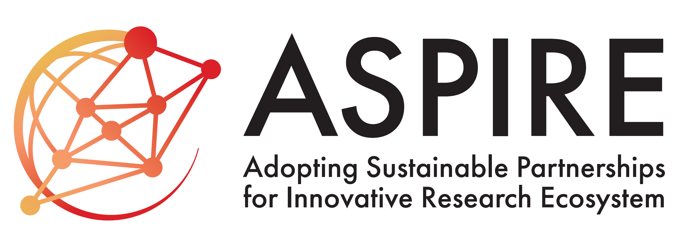
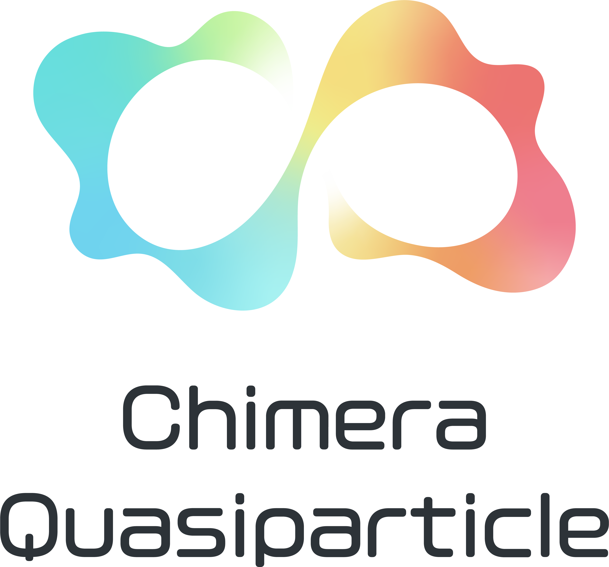

Special Thanks to
-
JST-ASPIRE: JPMJAP2322 & JPMJAP2410


-
JSPS Grant-in-Aid for Transformative Research Areas (A), "Chimera Quasiparticles"

-
Faculty of Science and Engineering, Iwate University
- Center for Sustainable Materials and Interfacial Science (CSMIS), Iwate University
- KIOXIA Iwate Corporation
- Hachimantai City
- Iwate Prefecture